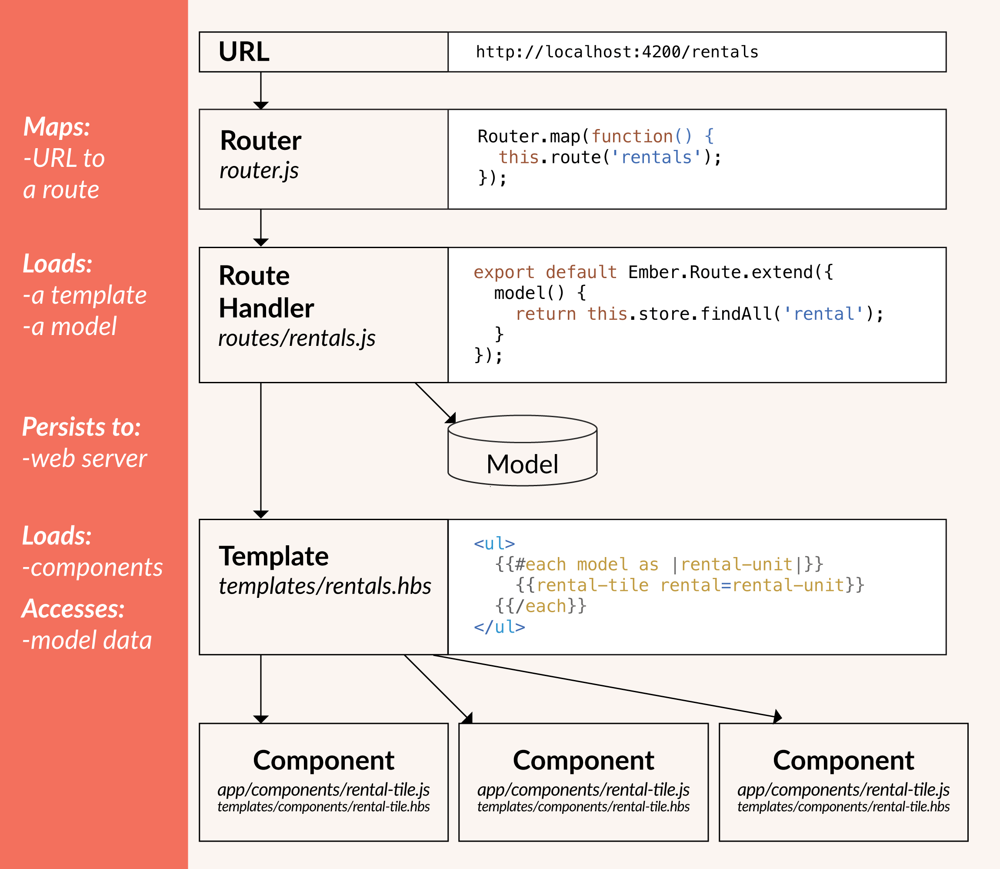

Ember
A framework for creating ambitious web applications.
by Manuel Wiedenmann
Who am I?
Ruby on Rails & Ember.js freelancer.
I love Open Source and a lot of other things.
- History
- Why is it a framework?
- What makes it so great?
- Pros and Cons
- API Documentation
- Who uses Ember
- Demo
- Q & A
History
Origins
Ember originates from SproutCore which happens to be still an active project. MobileMe the predecessor of Apples iCloud was largely build on SproutCore.
First commit

Creators & Core Team
Tom Dale & Yehuda Katz
Core Team
Releases
Ember releases follow a "train" release model. Every six weeks, the master branch of Ember (sometimes referred to as "canary") branches to become the new beta. After six weeks as a beta, this version becomes the new stable release of Ember.
Channels
- CANARY - Current
- BETA - 2.10.0-beta.1, 3 days ago
- RELEASE - 2.9.0, on October 17th, 2016
- LONG-TERM SUPPORT (LTS) - 2.8.2, on October 17th, 2016
SemVer
The Ember project adheres to semantic versioning. Releases are named according to a MAJOR.MINOR.PATCH scheme, and only MAJOR versions releases may change or remove public APIs after deprecation. MINOR versions may introduce new features so long as they are backwards compatible, and PATCH releases may include bug or security fixes.
Ember 3.0
They ain't no new features but old/deprecated code removed.
Why is it a framework?
First of all because it claims to be one.
A framework for creating ambitious web applications.
Conventions over Configuration
You should read the excellent essay on innovation and technology on aeon.coLargely ignored, often invisible, standards created stability in technological systems. Whether it’s screws or shipping containers, standards transformed the novel into the mundane, and made the local into the global.
Core Concepts
ember-cli
npm install -g ember-cli@2.8
ember new ember-quickstart
cd ember-quickstart
ember server
Directory Structure
$ tree -L 1
.
├── app
├── bower_components
├── config
├── node_modules
├── public
├── tests
├── vendor
├── bower.json
├── ember-cli-build.js
├── package.json
├── README.md
└── testem.js
App Directory Structure
$ tree -L 1
.
├── components
├── controllers
├── helpers
├── models
├── routes
├── styles
├── templates
├── app.js
├── index.html
├── resolver.js
└── router.js
Generators aka Blueprints
ember generate template user
ember g route user
ember g model user
ember g component user-profile
ember g --help # see all the generators
Testing & Builds
ember test
You can use:
- QUnit
- Mocha
ember build
ember build --env production
What makes it so great?
- Productivity
- Tooling
- Addons
- Upgrade path
- Community
Productivity
- Fast onboarding of new team members because every ember app is structured the same
- You don't have to invent everything all the time
- You don't need an architect to structure your app
- You can concentrate on your app
Tooling
- ember-cli The tool that makes it all happen
- broccoli Asset pipeline
- ES6 since 2014
- Ember Inspector Browser extension
- Ember-Fastboot Server-Side rendering
- ember-cli-deploy Deployment pipeline
Addons
- ember-data Out of the box support JSON:API
- emberfire An ember-data adapter for Firebase
- ember-cli-mirage Develop without a backend
- Liquid Fire For animations
- ember-engines Build isolated parts of an app
Build for other environments
Upgrade path
Community
Cons
- Steep learning curve
- Maybe not the fastest rendering engine - yet
- Not the smallest thing you can load
- ember.js minified production build 419 KB
- ember data minified production build 141 KB
- = 560 KB
API Documentation
Who uses Ember
Demo
Hire me!
- manuel@funkensturm.de
- @fsmanuel
- github.com/fsmanuel
- github.com/funkensturm